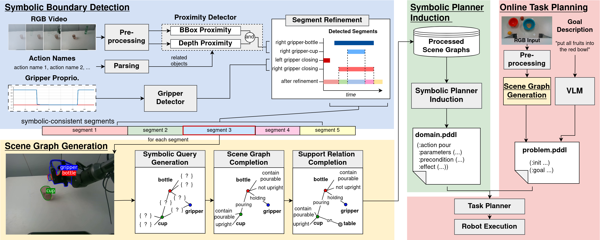

Accepted to IEEE-RAS International Conference on Humanoid Robots (Humanoids 2026)
Robotic demonstrations provide a rich source of task knowledge, which could be leveraged for robotic task planning. Explicit symbolic representations offer a structured interface between robotic observations and symbolic planning, enabling task knowledge to be reused across different tasks. However, constructing planning-ready symbolic representations from robotic demonstrations remains challenging, particularly in achieving temporally consistent abstraction and accurately grounded symbolic states. We propose a framework that converts robotic demonstrations into planning-ready symbolic representations by first segmenting demonstrations into symbolically consistent segments and then generating a symbolic scene graph for each segment through robot-prior-informed reasoning. The resulting scene graphs are further lifted into reusable Planning Domain Definition Language (PDDL) operators for downstream symbolic planning. Experiments on a multi-task manipulation dataset show that our method produces more accurate and planning-ready scene graphs than existing zero-shot baselines while avoiding excessive VLM inference. We further demonstrate a pipeline that reuses the automatically lifted symbolic operators for planning on previously unseen real-world tasks.
Overview of the proposed framework and experimental results.
Segments robotic demonstrations into symbolically consistent segments accurately in a zero-shot manner.
Leverages manipulation object typing, robot observations, and physical support reasoning to generate planning-ready symbolic scene graphs.
Induces reusable PDDL operators from grounded scene graphs, bridging foundation-model perception and symbolic task planning.
From robot demonstrations to symbolic task planning and online generalization.

Segment demonstrations into symbolic-consistent phases by detecting symbolic boundaries.
Section IV-AGenerate scene graphs through three stages: symbolic query generation, scene graph completion, and support relation completion.
Section IV-BConvert the generated scene graphs into PDDL planning files for downstream symbolic task planning.
Section IV-CReuse the induced planning domain and scene graph generation framework to plan unseen tasks online.
Section IV-DExplore scene graph visualization videos across different robots and manipulation tasks.
Explore the induced symbolic operators, their preconditions, and their effects from the 12 tasks above.
Explore the prompts used in our framework.
You are a robotics ontology assistant.
For each object, classify its manipulation properties.
Definitions:
- rigid:
The object maintains its shape during normal manipulation, and does not have hinges or joints (e.g., cup, bottle, bowl, fruit, vegetable).
- articulated:
The object contains movable joints or hinges (e.g., drawer, cabinet, door).
- fabric:
The object is made of fabric and can be manipulated as such (e.g., cloth, towel, blanket).
- container:
The object can contain another object (e.g., cup, bowl, bottle, drawer, cabinet, plate, box).
- movable:
The object is normally movable by a tabletop robot.
Objects:
{object_list}
Return ONLY valid JSON. Do NOT wrap the JSON inside markdown code fences.
{{
"object_name": {{
"type": "rigid/fabric/articulated",
"container": True/False,
"movable": True/False
}}
}}
You are a robotic scene analyst.
You are given:
1. An RGB image of a tabletop manipulation scene.
2. Detected movable objects with highlighted mask boundaries and labels.
3. Current gripper states: {gripper_state_description}
4. Current subtask: {current_action}. The image is taken during the middle of executing this subtask.
Your task is to complete the candidate symbolic scene graph, by selecting exactly ONE candidate for each relation and attribute from the provided lists.
Rules:
- Consider holding to be true if the gripper is closed.
- Inference should be consistent with the current subtask and gripper states.
- Choose exactly ONE candidate for every relation and attribute.
- If no relation holds, choose "none".
- Do NOT invent new objects or predicates.
--------------------------------------------------
Complete the following symbolic graph template
--------------------------------------------------
{scene_graph_template}
Replace each candidate list with the selected value.
Return ONLY valid JSON.You are a robotic scene analyst.
You are given:
1. An RGB image of a tabletop manipulation scene.
2. Detected objects with highlighted mask boundaries and labels.
The current symbolic scene graph is: {current_graph}
The following objects currently do not have a direct physical supporter: {missing_objects}
Task: Complete the scene graph by adding exactly ONE support relation for each listed object.
Rules:
- Use only the predicates: {support-related predicates}.
- Use only objects from the provided object list.
- Do not modify existing relations.
- Add only the missing support relations.
- Do not return relations/attributes seen in the current symbolic scene graph.
- Return ONLY valid JSON.
Object list: {objects_list}
{{
"relations":[
["object", "predicate", "supporter"]
]
}}You are an expert in PDDL planning.
You are given:
1. A valid PDDL problem file with the goal section intentionally omitted.
2. A human instruction describing the desired task.
Your job is to generate ONLY the PDDL goal section.
Rules:
- Only use object names that already appear in the problem.
- Only use predicates that are consistent with the problem/domain.
- Do NOT invent new objects or predicates.
- Do NOT modify any existing part of the problem.
- Return ONLY content within the (:goal ...) block.
- Do NOT include "(:goal" and ")".
- Do NOT include explanations or markdown.
Human instruction: {user_instruction}
PDDL problem: {problem_without_goal}
Domain types: {domain_types}
Domain predicates: {domain_predicates}
Example output:
(and
(predicate1 object_name1 object_name2)
(not (predicate2 object_name3 object_name4))
)BibTeX will be added when the final publication details are available.
Citation information forthcoming.